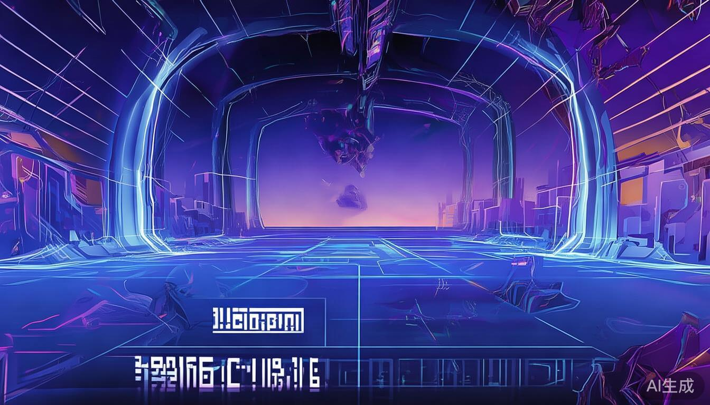

AI 未来趋势：数字智能 × 物理智能 × 量子算力 × 新质材料
本文是《白驹 ccowork》系列的未来展望篇。不谈已经发生的，只谈正在发生、且必然重塑世界的那条合流主线。
一、引言：AI 的下一站，不再是屏幕
过去三年，AI 的主战场在屏幕里：聊天、写作、画画、剪视频。但如果你只盯着屏幕，就会错过未来十年真正的大戏。
那场大戏的关键词是四个：数字 AI、物理 AI、量子计算、新质材料。它们不是四个彼此孤立的赛道，而是一条正在焊接成型的完整链条——数字 AI 负责"想"，物理 AI 负责"动"，量子计算负责"算"，新质材料负责"承载"。四者相乘，就是下一次产业革命的底层逻辑。
二、数字 AI + 物理 AI：让智能拥有身体

数字 AI 的强项是语言与推理，但它没有身体，改变不了物理世界。物理 AI 要补上的，正是这一课。
学术界把这条线叫具身智能（Embodied Intelligence）。它的核心不是"机器人会走路"，而是三件事的合流：
第一，世界模型。 今天的语言模型学的是"词与词的规律"，世界模型要学的是"物与物的规律"——重力、碰撞、因果、时间。只有理解物理规律，AI 才能预测"我推一下杯子，杯子会往哪倒"，而不是只会用文字描述杯子倒了。
第二，人形机器人。 从"能走"进化到"能干活"，是 2026 年之后最确定的产业方向之一。工厂里的装配、仓库里的分拣、家庭里的护理、医疗里的辅助，每一个场景背后，都是"数字大脑 + 物理身体"的组合。机器人的成本曲线正在复制当年手机的路：性能指数级上升，价格指数级下降。
第三，自动驾驶。 从"辅助驾驶"走向"真无人"，本质上是同一个故事——让 AI 在物理世界里做出安全、可靠、可解释的实时决策。
一句话总结：数字 AI 是大脑，物理 AI 是身体，具身智能是"大脑长进身体里"。
三、量子计算：给 AI 换一台引擎
经典计算机用 0 和 1 表示信息，一个比特同一时刻只能是一个状态。量子计算机用量子比特，它可以同时处于 0 和 1 的叠加态。这个看似玄学的差异，带来的是算力的维度级跃迁。
量子计算与 AI 的结合，正在三个方向上产生真实进展：
量子机器学习。 某些矩阵运算、采样和优化问题，量子算法存在指数级加速的理论可能。虽然离通用量子机器学习还有距离，但"量子特征映射""变分量子算法"已经从论文走向小型硬件验证。
量子化学模拟。 这是目前最清晰的应用场景。分子和化学反应本质上是量子系统，用量子计算机直接模拟分子，比经典计算机精确得多。这意味着药物设计、催化剂设计、材料设计，可能迎来从"试错"到"计算"的范式转变。
算力革命。 当经典芯片逼近物理极限，量子算力将成为"极限算力"的下一个来源。它的意义不在于替代经典计算机，而在于解决经典计算机永远解不动的问题。
一句话总结：如果数字 AI 是算法，量子计算就是给它换上一台不受经典物理束缚的引擎。
四、新质材料：AI 是新时代的"炼金术士"
过去，发现一种新材料平均需要十年、上万次实验试错。爱迪生试了上千种材料才找到灯丝，就是那个时代的缩影。而今天，AI 正在把"试错"变成"计算"。
AI 材料设计。 用模型预测材料的性能，再反过来"反向设计"出具备目标性能的材料——想要一种又轻又硬又耐高温的合金？先让 AI 在虚拟空间里生成候选结构，再只对最有希望的几个做实验验证。实验次数从十万级降到百级。
材料基因组。 像人类基因组计划一样，给材料建库、建标准、建数据。当数百万种材料的结构-性能数据被编码成可检索的"材料基因"，新材料的发现速度就不再受限于人的经验和运气。
落地场景。 固态电池的能量密度、高温超导的临界温度、光伏的转化效率、航空发动机的耐热合金、工业催化剂的活性——每一个"卡脖子"环节，背后都站着材料问题。而材料问题，正在变成 AI 算力问题。
这里有一个必须提到的中国语境：新质生产力。它的本质，就是"算力 × 数据 × 新材料"——不再靠堆人力、堆资源，而是靠智能驱动的高效能、高质量产出。
一句话总结：AI 不是只会写文章的画师，它是能凭空设计出新材料、新能源、新药物的"炼金术士"。
五、合流图景：一条完整的价值链条
把这四条线放在一起看，未来十年的产业图景就清晰了：
量子计算提供极限算力 数字 AI 负责推理与设计 物理 AI 负责执行与制造 新材料成为一切的物质载体。
举例：用量子计算模拟出新型催化剂 数字 AI 设计出完整生产工艺 物理 AI（机器人）在工厂里执行生产 新材料落地为电池、芯片、药物的实体。这个链条一旦跑通，从实验室到量产的时间，会从十年压缩到一年。
这不是科幻。它的每一环，在 2026 年都已经有了实验室级或小规模产业级的原型。
六、对普通人的启示
技术叙事容易让人焦虑，但真正的启示其实很简单：
第一，别怕被替代，怕的是不参与。 历史上每一次技术革命，最先受益的从来不是最聪明的人，而是最早动手的人。
第二，学会"与智能共舞"。 数字 AI 已经人人可用，物理 AI 和量子算力会通过云和工具渗透到你手里。你要做的不是理解每一个公式，而是理解"这条链条上，我在哪个位置，能用什么杠杆"。
第三，盯住新质材料的下游。 电池、芯片、医药、能源——新材料的每一次突破，都会在应用端制造出新的财富窗口。你不必造材料，但可以提前卡位用它的人。
结尾借用本系列的一句话：历史不会记住模型，历史只记住用模型改变了什么的人。而下一段历史的题目，已经写好了——数字 × 物理 × 量子 × 材料。
出处声明：本页内容为白驹 ccowork原创，或已标注引用来源；改编内容遵循原始项目许可证（如 MIT / CC），不侵犯原作者权益。若引用内容涉及版权问题，请联系我们更正。